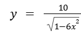
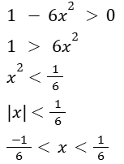
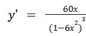

HOME
Learning Objectives
- Justify conclusions about functions by applying the Extreme Value Theorem.
- If a function f is continuous over the interval (a, b), then the Extreme Value Theorem guarantees that f has at least one minimum value and at least one maximum value on [a, b].
- A point on a function where the first derivative equals zero or fails to exist is a critical point of the function.
- All local (relative) extrema occur at critical points of a function, though not all critical points are local extrema.
Extreme Value Theorem
Conditions
- f(x) must be continuous on the closed and bounded interval [a, b]
If the conditions are met:
The Extreme Value Theorem guarantees that there is at least one value c and one value d on the interval (a, b) such that:
- f(c) <= f(x) <= f(d) for all x in [a, b]
Example
Find the extreme values in a function 
Steps
- Find the Domain of the function
In this case, for f(x) to be defined, the expression under the sqare root must be positive.
>
- FInd the first derivative:

- Find critical points - where the derivative is equal to zero or undefined.
The deriviative is defined for all values within the domain
y' = 0 when 60x = 0, or when x = 0
The only critical point is x=0
- Determine the nature of the critical points
You can verify whether x = 0 is a local max or min by looking at values slightly to either side.
You can also see that y' is negative (decreasing slope) to the left of x = 0 and positive (increasing slope) to the right of x = 0.
So, x = 0 is a local minimum
Therefore, there is a local minimum value of 10 at x=0
Newton's Method for Finding Zeroes
External Reference for Explanation
Practice Problems (external site)
Previous Topic - Using the Mean Value TheoremNext Topic